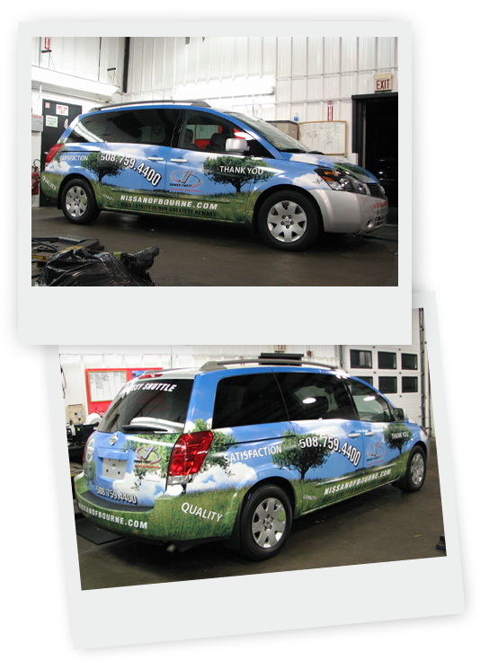
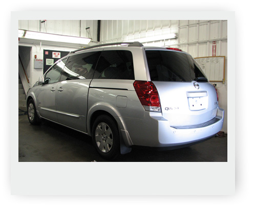

Nissan of Bourne is a dealership in Bourne,MA.
Vehicle: NISSAN Quest.

This is how this van looks today

Nissan Quest van before graphics installation
September 29, 2007
Nissan of Bourne is a dealership in Bourne,MA.
Vehicle: NISSAN Quest.

